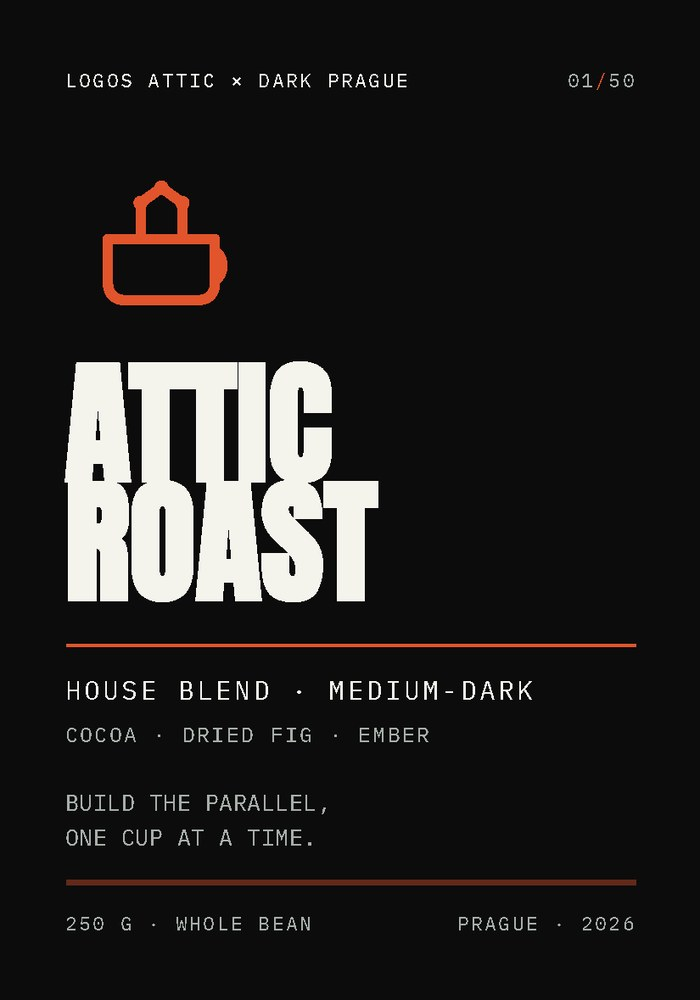
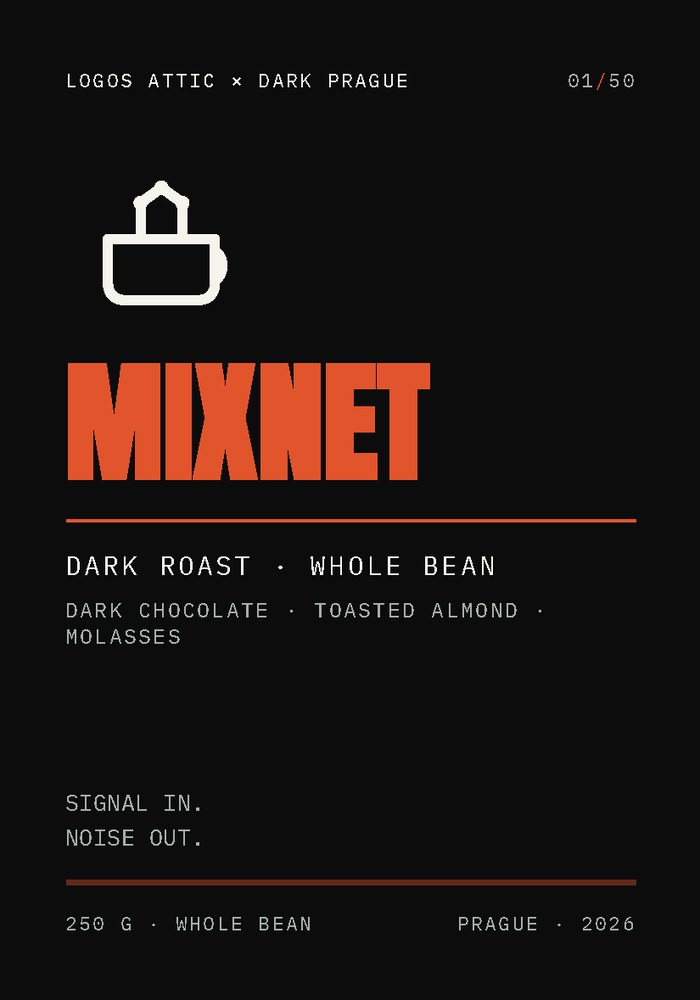
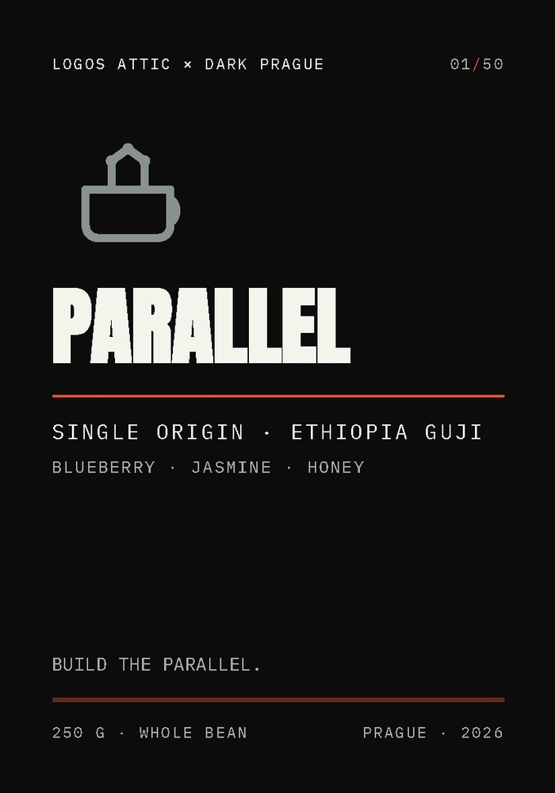
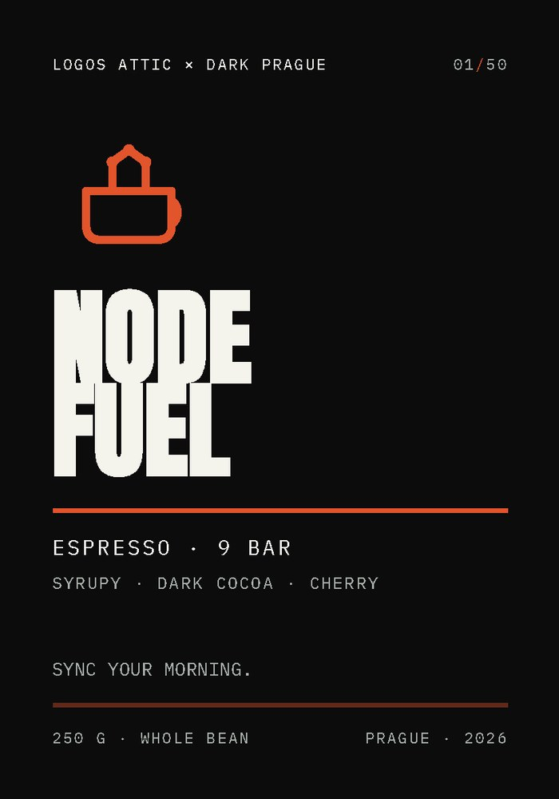
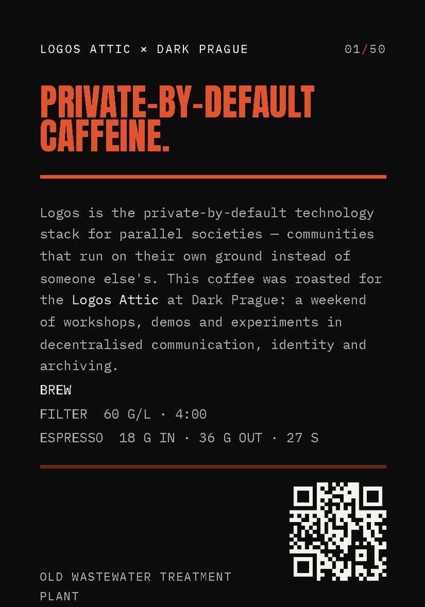

Logos Attic × Dark Prague 2026
Attic
Roast
A numbered edition of 50 bags, roasted for the Logos Attic coffee session at Dark Prague — the Old Wastewater Treatment Plant, Prague.
Build the parallel, one cup at a time.
Logos Attic × Dark Prague 2026
A numbered edition of 50 bags, roasted for the Logos Attic coffee session at Dark Prague — the Old Wastewater Treatment Plant, Prague.
Build the parallel, one cup at a time.
Logos is the private-by-default technology stack for parallel societies — communities that run on their own ground instead of someone else's. The Logos Attic is its room at Dark Prague: workshops, demos, live experiments.
A coffee session needs no agenda. You pour, you sit, you talk to the person next to you. So we branded the beans like we brand the stack: bone on ink, one ember accent, nothing decorative.
Every bag is numbered 01–50. There are fifty of them. When they are gone, they are gone.
01 — The label family







02 — Brand system
#0C0C0D#F4F3EC#9CA49D#E2542BInk and bone carry ~95% of the surface. Ember is a rule and a mark — never a fill. Sage is for secondary metadata only.
A cup whose steam is a network — three nodes, two edges. One continuous line, no fills except the nodes.
03 — Production
| Bag label | 70 × 100 mm | 2-up on A4, or a wrap sticker |
| Round sticker | 50 mm Ø | die-cut |
| Table card | A5 148 × 210 mm | 350 gsm uncoated |
Everything is supplied as a vector PDF at the exact physical size (no scaling) plus a 300 DPI PNG preview. Vector = infinite resolution and crisp small type.
Named as hex for screen/spec. For print, convert to CMYK and expect the ember to shift — ask the printer for a proof of #E2542B. Ink is rich black, set to C40 M30 Y30 K100 if printing CMYK; otherwise use the black of the stock.
Matte uncoated label stock, or a kraft bag with the label applied. Matte lamination keeps it from fighting the dark artwork. Avoid gloss.
Build the parallel, one cup at a time.Signal in. Noise out. — MixnetSync your morning. — Node FuelPrivate-by-default caffeine. — back label04 — Files
All label artwork, the sticker, the A5 table card and the mark — print-ready PDF + 300 DPI PNG.
Download the print kit (.zip, 1.6M)